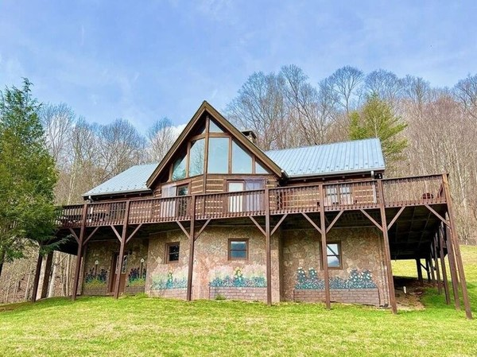

About the Cabin
Welcome to Heavenly Hideaway — a 4-bedroom, 3.5-bath cabin nestled on 12 private acres at 3,200 feet elevation. Surrounded by peaceful creeks and full of cozy charm, the cabin features a hot tub under the stars, fire pit, and peaceful mountain views. Perfect for families, couples, or anyone needing a true escape.
Gallery
Things to Do
- 🚣 New River kayaking and tubing
- 🥾 Hiking at Mt. Jefferson & Grayson Highlands
- 🛍️ Explore West Jefferson's shops and cafes
- 🍁 Fall foliage & scenic drives